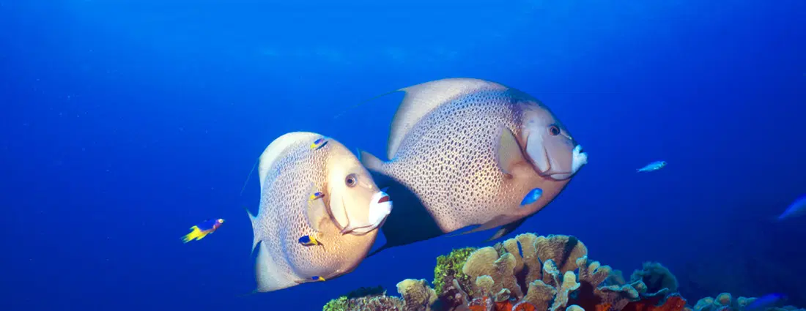
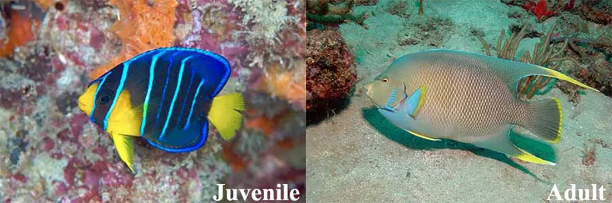
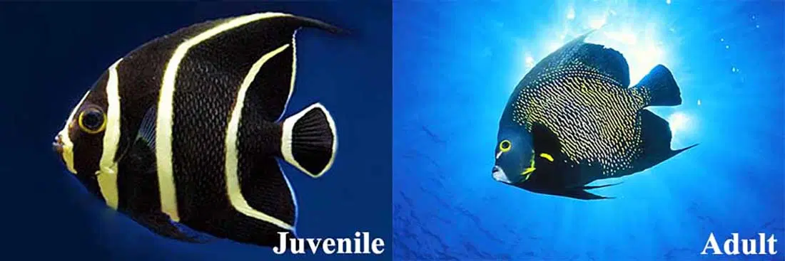
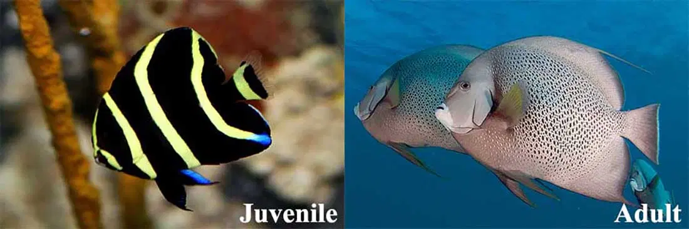
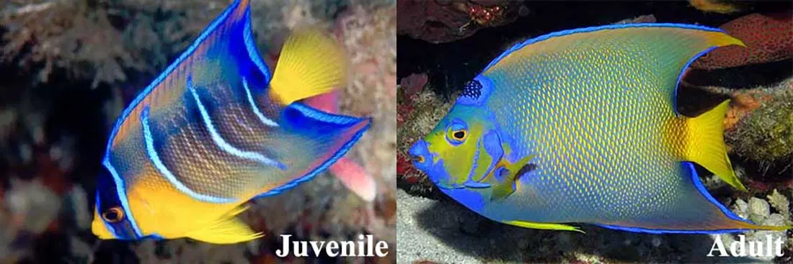
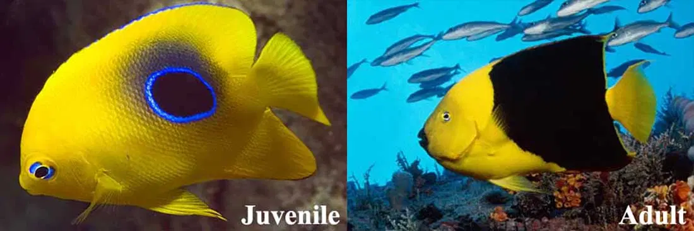

Angelfish Identification Guide
Posted on 18 January 2018

Probably the most regal fish to be found on any Caribbean reef, Gray Angelfish seem to enjoy posing for photos almost as much as we enjoying photographing them.
The Angelfish found in the Caribbean are thin and oval-shaped with adults often growing larger than 30cm/1ft. This family of fish are easily identified by their long, distinctive dorsal and anal fins. However, on closer inspection you will also notice that each member of the family has a spine, called a preopercle, located at the bottom of their operculum (gill cover) and a slightly rounded and protruding forehead. Furthermore they have tiny mouths which are perfect for tugging off algae and coral polyps from off the reef. They also mate for life so if you see one you'll normally be able to find their partner nearby.
BERMUDA BLUE ANGELFISH
(Holacanthus bermudensis)
Spanish: Isabelita Azul

Usually 20-35cm (8-14in. )in length but can grow as big as 45cm (18in.). Tail and pectoral fins bordered in yellow with no crown on the forehead. Juvenile: Middle turquoise body bar is straight.
This bluish-brown fish has long trailing dorsal and anal fins that are blue with yellow tips. Juveniles are a much darker blue with yellow highlights and bright turquoise bars running vertically up the body. They are also believed to possess the ability to make loud throbbing noises to startle predators and attract attention of potential mates. They live in and around coral reefs where they graze on various coral and sponges. They are often observed to form breeding pairs which, on rare occasions, may include a member from the visually similar Queen Angelfish (Holacanthus ciliaris) species. The extremely rare offspring of these two species are called Townsend Angelfish and can vary in both colour and markings.
FRENCH ANGELFISH
(Pomacanthus paru)
Spanish: Guinea

Usually 25-35cm (10-14in.) in length but can grow as big as 45cm (18in.). Black scales with yellow tips. Eye ringed in yellow. Juvenile: the rounded tail is bordered in yellow.
The French Angelfish is found along the western Atlantic coast from as far north as New York and the Bahamas to Brazil in the south. They are also often sighted around the Caribbean's eastern islands such as the Antilles and Roatan. They have also been observed inhabiting the eastern Atlantic from around Ascension Island and St. Paul's Rocks. They are habitually seen at depths of between 2m/7ft and 100m/330ft and can grow up to 41cm/16in.
These angelfish are usually seen in pairs on shallow reefs swimming in close proximity to fan coral. They do feast on a relatively wide range of food including algae, bryozoans, zoantharians, alcyonacea and tunicates. However their main source of nutrition is sponges which constitute roughly 70% of the species' diet but since sponges are plentiful, the fish are normally well fed.
Juveniles tend cleaning stations where they service a broad range of clients, including jacks, snappers, morays, grunts, surgeonfish, and wrasses. At the station the cleaner flutters its pectoral fins and thus signals that he is open for business. Then, when cleaning, it touches the clients with its pelvic fins.
The adult background coloration is a very dark blue but the scales of the body, except those at the front from nape to abdomen, are rimmed with golden yellow. Furthermore, the pectoral fins have a broad orange-yellow bar, the dorsal filament is yellow, the chin is whitish, the outer part of the iris is yellow, and the eye is narrowly rimmed below with blue. Juveniles are black with vertical yellow bands.
Spawning pairs are strongly territorial and usually both partners defend vigorously their territory against neighbouring pairs. During the day you will mostly see these fish out and about, but come night they will seek out shelter in their designated hiding spot which they return every night.
Their flesh considered to be of good enough quality for human consumption. It is marketed fresh in Singapore and Thailand, however it has been linked to ciguatera poisoning which is a severe form of food poisoning which can last up to 20 years. This fish has also been successfully raised in captivity. Highly prized for public and private aquaria, the French angelfish is a very hardy, long-lived, and disease-resistant species.
GREY ANGELFISH
(Pomacanthus arcuatus)
Spanish: Cachama Blanca

Usually 43-48cm (17-19in.) in length but can grow as big as 60cm (24in.).10 to 18 in., max 2 ft. Gray body. Yellow inner face of pectoral fin. Square-cut tail. Juvenile: Square-cut tail with white to transparent margin.
These thin, oval fish have long dorsal and anal fins which can sometimes trail out past their tail fin. They are a beautiful shade of grey with dark specks on each scale, and white jaws. Juveniles have five yellow bands on each side running vertically over a black body. They will slowly change to a uniform grey as their rounded fins also become more angular over time. These reef fish have been seen developing long-term monogamous breeding pairs. They are very popular with both reef divers and photographers due to the curiosity. Unfortunately this also makes them easy prey and they are often spearfished for food.
Usually spotted with a partner, these Grey Angelfish form long-term monogamous breeding pairs which inhabit reefs with a depth of approximately 2-30m (7-98ft). They do this because these reefs found in this depth range provide optimal hiding places and so they avoid becoming prey for predators. Juveniles seem to prefer small shallower reefs heads with surrounding grassy areas.
The females spawn from April until September, usually on the deeper areas of the reef and beginning just before sunrise. Couples will glide 1-2m (3-6ft) above the reef with a few quick dashes up into the water column. If an unaccompanied individual tries to approach the pair, they are very quickly chased away. When they are finally ready, the pair will swim slowly, rising in the water column, and bring their vents close together before releasing eggs and sperm into the water. During each reproduction cycle, which is repeated numerous times over the 6 months, 25,000-75,000 eggs are released. Larval Grey Angelfish are believed to hatch approximately 15-20 hours after fertilization. They will then find homes in beds of floating plankton until they reach around 15mm when they'll settle onto the coral reef.
QUEEN ANGELFISH
(Pomacanthus ciliaris)
Spanish: Guinea

Usually 20-36cm (8-14in.) in length but can grow as big as 45cm (18in.). Dark blue "crown" on forehead is flecked and ringed with brilliant blue. The juvenile is identified curved turquoise body bars.
This colourful oval-shaped reef fish has trailing dorsal and anal fins and a wedge-shaped tail. It tends to be of a light blue colour towards the front of its body which gradually fades to a green as we look to the rear with bright blue and yellow accents on its fins. It can be distinguished from the similar Bermuda Blue Angelfish by the conspicuous dark "crown" on its forehead. Except for its long term breeding mate, these fish seem to be somewhat unsociable and keep away from all other members of the Pomacanthidae family. Usually found near the bottom of coral reefs, they spend their day eating sponges and some marine invertebrates.
Human consumption of this fish has been linked to cases of ciguatera poisoning. Ciguatera poisoning is triggered by the bioaccumulation of ciguatoxins in the meat of tropical marine fishes. Ciguatoxins are manufactured by marine dinoflagellates that fix themselves to marine algae and thus may be incidentally consumed by herbivorous fish. Bigger piscivorous reef inhabiting fish who occupy the top of the food chain become reservoirs for the greatest amounts of ciguatoxin by consuming other fish on the reef. Humans who suffer ciguatera poisoning may suffer from gastrointestinal issues which may last anywhere from several days to several years and in extream cases as much as 20 years. Other symptoms include a general weakness in their arms and legs, and a reversal in the ability to differentiate hot versus cold. The illness is serious anybody displaying symptoms should seek out a doctor immediately.
Queen Angelfish are usually timid but every now and then they might get a bit curious and come in to watch divers from a short distance. They are harvested commercially but only for aquarium hobbyists and not really as a food source.
ROCK BEAUTY
(Pomacanthus tricolor)
Spanish: Isabelita Medioluto

Usually 13-20cm (5-8in.) in length but can grow as big as 30cm (12in.). The fore body and tail are a bright yellow while the mid and rear are black. Blue markings both above and below pupil. Juvenile fish have a dark black spot ringed in brilliant blue on rear body which expands as the fish gets older.
This easily identifiable reef fish is very protective of its home and seldom leaves the small area which it has lain claim to. Instead this fish patrols its territory and challenges almost all other Rock Beauties which may stray into its domain. The only exception being its mate with which it builds a long lasting monogamous relationship. It has a flat, oval black body with exaggerated black dorsal and anal fins (with yellow and orange fringes) and a yellow tail and face with dark lips. The juvenile is nearly entirely bright yellow, with a dark blotch on both flanks which slowly develops until it has enveloped the majority of its body. Despite difficult to maintain, these angelfish are often sold to home aquariums due to their bright and beautiful colouration. They are however very rarely hunted for human consumption.
Often mating pairs can be seen to consist of both a large and a small individual suggesting a sexual dimorphism exists in the species. Nevertheless there is no difference in the coloration of either sexes. The pair reproduces by gradually ascending side-by-side up into the water column and releasing large sums of semen and eggs into the water. The female can release up to 75 thousand eggs each day around sunset, and as many as ten million eggs during each spawning cycle. The eggs are translucent, globular, and pelagic (remains in the water column and doesn't sink to the bottom), each comprising a small drop of oil for buoyancy. The eggs hatch sometime between 15 to 20 hours after fertilization.